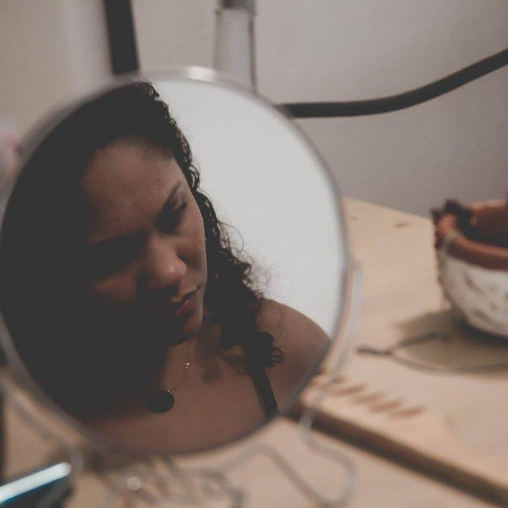
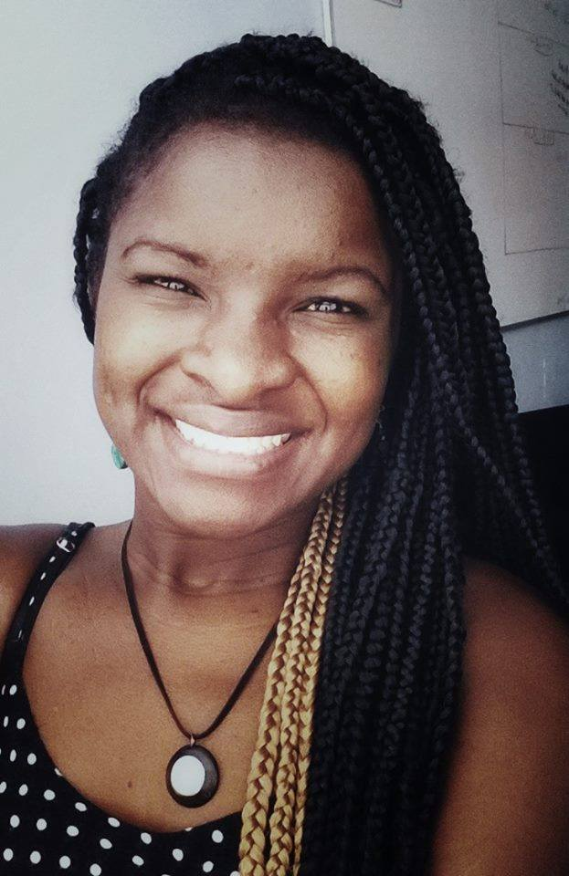

Funções / Assistência de direção
As informações de cada perfil são de responsabilidade das profissionais.
Você quer conhecer profissionais de quais estados?
Marcar/Desmarcar todos
CARREGANDO ...
 Amanda Lopes (SP)
Amanda Lopes (SP)
Amanda Lopes
34 anos | São Paulo (SP)
amanda_lopes0@hotmail.com
Formada em Administração de Empresas e professora de matemática. Atuei por 10 anos na área de Recursos Humanos. Graduanda do último ano em Comunicação Social com ênfase em Cinema. Persistente, bastante curiosa e proativa. Me sinto uma eterna aluna. Crio histórias há 20 anos, porém somente nos últimos 4 anos encarei o cinema e pude participar de mais de 25 curtas metragens. FIES, zero recursos, muita fé e alguns amigos, arrisquei nos meus projetos próprios. Empreendedora atualmente desenvolvo a plataforma Mulheres Audiovisual voltada para distribuição de filmes feitos por mulher e vagas direcionadas a esse público.
http://amandalopesfilmes.wixsite.com/portfolio
Outras atividades de Amanda Lopes
Captação de Recursos |
Coordenação de projeto |
Direção |
Edição |
Exibição |
Oficinas e cursos livres
|
Produção |
Programação e curadoria |
Roteiro
Amostra de vídeo
 Ana Carolina M Alho (SP)
Ana Carolina M Alho (SP)
Ana Carolina M Alho
31 anos | Botucatu (SP)
karolkaos@hotmail.com
Sou formada em cinema, atualmente cursando Pós – Graduação/MBA - Comunicação e Marketing em mídias digitais na Estácio previsão de conclusão em 10/2016. Possuo experiência com continuidade, assistência de direção, realização de roteiro, edição e manutenção do cronograma. Supervisão de pessoas, coordenação de atividades e recebimento e distribuição de materiais. Conhecimento em Designer Educacional, atuando com roteirização de vídeo aula. E tenho também experiência com a fotografia still, que umas das minha grandes paixões, com isso incluí a experiência com montagem de estúdio, edição de fotografia e videos. Minhas principais habilidades são: Integridade e coerência, flexibilidade.
Outras atividades de Ana Carolina M Alho
Continuidade |
Edição |
Fotografia Still |
Produção
Amostra de vídeo
 Carine Fiúza (PB)
Carine Fiúza (PB)
Carine Fiúza
27 anos | João Pessoa (PB)
carinefiuza@gmail.com
Graduanda em Rádio e Tv na Universidade Federal da Paraíba e colaboradora no Laboratório Audiovisual de Produção - LAP que integra o departamento de Cinema e Comunicação da UFPB. Concluiu os curso técnicos de Direção, Ass. de direção e Produção executiva pelo CANNE. Atualmente é Produtora, diretora e fotografa freelancer. Ministra cursos livres de cinema e audiovisual. Como diretora elenca os trabalhos: No escuro (2009), Autonomia Mulheres Rurais (2014), Campanha contra lesbofobia (2016); Como produtora: “Capela” (2014), “O Lendário…” (2014), “Ilha” (2014), “Nó do diabo” (2017). Além dos DVDs de “Chico César” para o Canal Brasil e o “Quinteto convida” para Tv UFPB.
https://www.facebook.com/carine.fiuza.3
Outras atividades de Carine Fiúza
Assistência de fotografia |
Cineclubismo |
Coordenação de projeto |
Direção |
Exibição |
Fotografia still |
Gerência de mídia |
Oficinas e cursos livres |
Pesquisa e desenvolvimento |
Produção
Amostra de vídeo
 Deka Carvalho (SP)
Deka Carvalho (SP)
Deka Carvalho
36 anos | São Paulo (SP)
kilometroprodutora@gmail.com
Sou Deka Carvalho, 36 anos, mãe, preta, favelada, produtora de videos e fotos. Sou responsável pelo audiovisual no estado da CUFA SP (Central Única das Favela de São Paulo) , sou proprietária da produtora Kilômetro na zona leste de São Paulo. Meu objetivo é mostrar o território favela no seu melhor contexto verdadeiro e nos colocarmos como protagonistas em todas as esferas.
https://www.facebook.com/kilometroprodutora/
Outras atividades de Deka Carvalho
Direção |
Direção de Arte |
Edição |
Exibição |
Pesquisa e desenvolvimento |
Preparação de Elenco |
Produção |
Produção Executiva |
Roteiro
Amostra de vídeo
 Íldima (PE)
Íldima (PE)
Íldima
35 anos | Recife (PE)
ildima@gmail.com
Pós graduada em Estudos Cinematográficos pela Unicap (PE), Íldima iniciou suas pesquisas sobre linguagem audiovisual ainda no processo de graduação, na Uneb (BA), tendo publicado a tese “Cinema, indústria e história: três momentos do cangaço no cinema brasileiro”, em 2004. Durante 3 anos realizou reflexões cinematográficas em seu blog “Embriaguez da Rapariga”. Em 2016, iniciou seu estudo sobre temporalidade e imagem com o primeiro trabalho titulado “O peso da câmera lenta”. Neste mesmo ano, formou o coletivo “Alastrado produções artísticas” no qual atual como diretora de arte, produtora e assistente de fotografia. Concilia pesquisa sobre a natureza da imagem e produção audiovisual.
https://www.facebook.com/alastrado/
Outras atividades de Íldima
Cineclubismo |
Coordenação de projeto |
Crítica |
Direção de arte |
Oficinas e cursos livres |
Pesquisa e desenvolvimento |
Produção |
Programação e curadoria |
Roteiro
 Iris Regina (PE)
Iris Regina (PE)
Iris Regina
31 anos | Olinda (PE)
irisregin@gmail.com
Sou nascida no interior de São Paulo onde fiz faculdade de Artes Visuais, mas estou em Pernambuco desde o ano de 2012, onde fiz algumas especializações na área de designer gráfico e hoje dou aula de educação popular na área. Aqui me apaixonei pelo cinema e logo comecei com o cineclubismo e até hoje faço parte do Cineclube Bamako com foco no cinema africano e diáspora Cursos de Roteiro com Marcelo Paes de Carvalho, Laboratório Audiovisual com Pedro Severien, alguns cursos de captação e fotografia, áudio e produção. Fiz curadoria e juri em alguns festivais do estado como o Festival de Cinema de Triunfo, Recifest, Festicine e a I Semana de Comunicação Popular de Recife. Trabalhei na produção da mostra o CRUA (Cinema Rural Andarilho) que aconteceu em algumas cidades do interior de Pernambuco e Paraíba, também na mostra Olhar do Alto no Festival Olinda Coco Zumbi. Integro a produtora Studio Ru@ do CCJ-Recife (Centro de Comunicação e Juventude).
Outras atividades de Iris Regina
Assistência de Fotografia |
Cineclubismo |
Continuidade |
Design gráfico |
Direção |
Pesquisa e desenvolvimento |
Programação e curadoria |
Roteiro
Amostra de vídeo
 Izabel Neiva (SP)
Izabel Neiva (SP)
Izabel Neiva
40 anos | Guarulhos (SP)
izabel_neiva@hotmail.com
Sou Bacharel em Artes Cênicas pela Escola Celia Helena, licenciada em artes com habilitação em teatro pela Faculdade Paulista de Artes, MBA pós graduada em cinema pela Lafilm Institute, técnica em atuação e direção pelo Inst Stanilavisk. Trabalhos: Assist Direção Longa metragem Off Line, Direção/Produção e atuação curta A Utima Chance, Direção e Produção Curta O Menino da moeda (proj em fase de captação). Dezenas de curtas como atriz, no teatro trabalhei com os diretores: Marco Antônio Brás, Claudia Schapira, Bete Dorgam, Simone Boer.
Outras atividades de Izabel Neiva
Atuação |
Continuidade |
Direção |
Preparação de Elenco |
Produção |
Roteiro
Amostra de vídeo
 Keila Serruya (AM)
Keila Serruya (AM)
Keila Serruya
Manaus (AM)
keilaserruya@gmail.com
Formada em comunicação social, manauara, diretora audiovisual, artista visual e produtora. Diretora de obras audiovisuais “Nessa Cidade Todo Mundo Já Bebeu na Bica” e “ASSIM”, que circularam em festivais nacionais e internacionais e hoje estão sendo exibidos em canal fechado. Produtora e assistente de direção em projetos series, curtas, longas metragens, espetáculos e intervenções. Esteve a frente de projetos como MIVA - Mostra Internacional de Videodança da Amazônia, Até o Tucupi, Papo por frame, série de TV na Boca do Povo, serie de TV infantil Buzzz&Bizz, Noite Negra, Grito Rock Manaus dentre outros. Atualmente faz parte do grupo Picolé da Massa e é gestora do DaVárzea das Artes.
Outras atividades de Keila Serruya
Cineclubismo |
Continuidade |
Direção |
Edição |
Exibição |
Fotografia Still |
Pesquisa e desenvolvimento |
Produção
Amostra de vídeo
 Lidia dos Anjos (CE)
Lidia dos Anjos (CE)
Lidia dos Anjos
30 anos | Fortaleza (CE)
liddya1@gmail.com
Atriz , graduanda em Teatro pela UFC. Figurinista e costureira. Na Cia Cearense de Molecagem atuei em seus espetáculos infantis. Participei de espetáculos como Cale-se, com o Seres de Teatro, grupo que ainda atuo. Experimento I, foi trabalho totalmente autoral do grupo ETIPI do qual fui fundadora em 2013. Outros espetáculos: Disfarça, meu bem; Cidade sem Nome, etc. Performances: Carandiru pra Quem?;Bandido bom é Bandido Morto, Pátria Amada com Margens Urbanas ( grupo de intervenção que sou membro) Figurino: Disfarça, Meu bem; Cidade sem nome; Experimento I, Cale-se. Figurino e Arte em curtas Salto 15, VS EX SR tristeza com o Coletivo Descabelo. Preparação de elenco: Curta, Iracema.
Outras atividades de Lidia dos Anjos
Atuação |
Direção de arte |
Figurino |
Oficinas e cursos livres |
Pesquisa e desenvolvimento |
Preparação de elenco |
Roteiro
Amostra de vídeo
 Lygia Pereira (SP)
Lygia Pereira (SP)
Lygia Pereira
24 anos | Campinas (SP)
lygiapsc@gmail.com
Graduanda do último semestre do curso de Midialogia na Unicamp, possui experiência em produções audiovisuais (captação de imagem, direção e produção), sobretudo em documentários. Atuou na direção, roteiro e montagem do curta "CEP 05300"; na assistência de produção do documentário "Jogo Truncado", produzido pelo Canal Futura; na co-edição do coletivo de mídia independente Ô, Xavante!. Possui experiência com produção cultural, tendo trabalhado na 7ª Bienal de dança do Sesc de Campinas.
https://lygiapereirablog.wordpress.com/
Outras atividades de Lygia Pereira
Assistência de fotografia |
Continuidade |
Coordenação de projetos |
Direção |
Direção de fotografia |
Edição |
Exibição |
Fotografia still |
Pesquisa e desenvolvimento |
Produção
Amostra de vídeo
 Luh Moreira (SP)
Luh Moreira (SP)
Luh Moreira
31 anos | São Paulo (SP)
luhmoreira.producao@gmail.com
Formada em RTV, cursou pós-graduação em Produção Executiva e Gestão de Televisão, possui conhecimento nas áreas de gestão e produção de projetos de capacitação cinematográfica (principalmente voltados para a juventude oriunda de comunidades populares e periféricas), produção de curta e longa-metragem (set e mesa), produção cultural, mídias sociais, desenvolvimento e gestão de projetos audiovisuais entre outros conhecimentos de utilidade para o setor.
Outras atividades de Luh Moreira
Coordenação de projeto |
Oficinas e cursos livres
|
Pesquisa e desenvolvimento |
Produção
Amostra de vídeo
 Mariani Lima (SP)
Mariani Lima (SP)
Mariani Lima
25 anos | Campinas (SP)
mariani_lima@hotmail.com
Formada em Cinema e Audiovisual na UFPel, atualmente trabalho como cinegrafista e editora freelancer em Campinas. Também sou Audiodescritora certificada.
http://www.vimeo.com/mariani
Outras atividades de Mariani Lima
Atuação |
Direção |
Direção de Fotografia |
Edição |
Fotografia Still |
Oficinas e cursos livres |
Roteiro
Amostra de vídeo
 Natalie Matos (MG)
Natalie Matos (MG)
Natalie Matos
21 anos | Belo Horizonte (MG)
natalie.m.moura@gmail.com
A única certeza que mora em mim é a de que a cada passo aprendo algo novo e construo minha identidade. Como uma árvore que cresce regada ao amor e às dificuldades, dá bons frutos e flores, mas também amadurece antes da hora e às vezes até mesmo cai, mas, sempre lembra que tudo que se vive fortalece suas raízes. E sempre quando eu precisar vou ao meu interior e discuto comigo, para entender esse meu eu que às vezes recusa falar e prefere apenas sentir. Gradua em Cinema e Audiovisual e Técnico em Artes Visuais, hoje tenho projetos de visibilidade ao protagonismo da mulher preta e a juventude periférica.
http://nataliem-moura.wixsite.com/nataliematos
Outras atividades de Natalie Matos
Animação |
Assistência de foto |
Captação de Recursos |
Captação de Som |
Continuidade |
Correção de cor |
Direção |
Direção de Arte |
Direção de Fotografia |
Edição |
Fotografia Still |
Iluminação |
Mixagem e efeitos sonoros |
Pesquisa e desenvolvimento |
Preparação de Elenco |
Produção |
Roteiro
Amostra de vídeo
 Naymare Azevedo (RN)
Naymare Azevedo (RN)
Naymare Azevedo
24 anos | Natal (RN)
naymaresazevedo@gmail.com
Naymare Azevedo, produtora executiva, gestora de políticas públicas e marketing cultural. Diretora criativa do Espaço Criativo Aayabá e coordenadora do projeto de formação criativa do AFROTONIZAR.
Outras atividades de Naymare Azevedo
Atuação |
Captação de Recursos |
Cineclubismo |
Coordenação de projeto |
Direção |
Oficinas e cursos livres
|
Pesquisa e desenvolvimento |
Produção |
Produção executiva
Amostra de vídeo
 Pamella Aleixo (SP)
Pamella Aleixo (SP)
Pamella Aleixo
26 anos | São Paulo (SP)
pamelletion@gmail.com
Pamella Aleixo, assistente de direção, assistente de arte e produtora audiovisual. Graduada em Comunicação Social Rádio, Tv e Vídeo pela Faculdades Metropolitanas Unidas – FMU, especializada em Direção de Arte pela Academia Internacional de Cinema - AIC e com formação técnica em Produção audiovisual pelo Instituto Criar de TV, Cinema e Novas Mídias.
http://br.linkedin.com/pub/pamella-aleixo/22/86a/310
Outras atividades de Pamella Aleixo
Direção de arte |
Produção
Amostra de vídeo
 Priscila Oliveira (SP)
Priscila Oliveira (SP)
Priscila Oliveira
28 anos | Valinhos (SP)
priscifch@gmail.com
Sou formada em Ciências Sociais e Midialogia, pesquiso direção de criança para cinema no curso Mestrado em Artes da Cena. Minha formação e experiências estão voltadas para roteiro e direção, mas gosto de ampliar meus conhecimentos teóricos e práticos em outras áreas do audiovisual. Também tenho interesse em trabalhos que envolvam o negro e a mulher no cinema (na frente e atrás da câmera), principalmente em relação à construção de personagens.
https://www.facebook.com/ameiavista
Outras atividades de Priscila Oliveira
Direção |
Ensino superior |
Figurino |
Fotografia Still |
Gerência de Mídia |
Oficinas e cursos livres |
Pesquisa e desenvolvimento |
Preparação de Elenco |
Produção |
Programação e curadoria |
Roteiro
Amostra de vídeo
 Prix Clementino (RJ)
Prix Clementino (RJ)
Prix Clementino
30 anos | Rio de Janeiro (RJ)
sanclepriscila@gmail.com
Estudei Comunicação Social - Jornalismo, na PUC-Rio. Comecei a vida profissional trabalhando com produção, na produtora No Ar Comunicação, de Alice Maria Reininger, renomada jornalista e principal responsável pela criação do Globo News. Trabalhando como assistente de direção e produtora de reportagem, no Programa Especial, da TV Brasil. E no Programa Mãe & Cia, do GNT. Tendo sido assistente da diretora Angela Patrícia Reiniger -Três Irmãos de Sangue (2006), durante 5 anos. Paralelamente, realizei trabalhos como freelancer de direção, produção, repórter e roteiro, atuando em vídeos clipes, vídeos institucionais e trabalhos de produção local e produção de reportagem.
Outras atividades de Prix Clementino
Cineclubismo
|
Direção |
Pesquisa e desenvolvimento |
Produção |
Roteiro
Amostra de vídeo
Quézia Lopes (RJ)
Quézia Lopes
29 anos | Niterói (RJ)
queziamaria@yahoo.com.br
Bacharela em Cinema e Audiovisual pela Universidade Federal Fluminense (UFF), com experiência como diretora, roteirista, produtora, editora e assistente de direção e de produção, no cinema e audiovisual independentes.
https://www.facebook.com/queziamarialopes
Outras atividades de Quézia Lopes
Cineclubismo |
Coordenação de Projeto |
Crítica |
Direção |
Edição |
Pesquisa e desenvolvimento |
Produção |
Programação e curadoria |
Roteiro
Amostra de vídeo
 Silvia Roberta (BA)
Silvia Roberta (BA)
Silvia Roberta
27 anos | Salvador (BA)
srambiental@gmail.com
Possuo formação na área de Gestão do Meio Ambiente. Tenho experiência na área de audiovisual, através de produção de Documentário, captação de recurso e Direção de curtas metragens.
Outras atividades de Silvia Roberta
Captação de Recursos |
Pesquisa e desenvolvimento |
Produção
Amostra de vídeo
Talicia Venâncio (SP)
Talicia Venâncio
27 anos | Osasco (SP)
talicia@novoparafuso.com.br
Sócia-fundadora da Produtora Novo Parafuso Produções, formada em Publicidade e Propaganda pela Faculdade UNIESP. Freelancer em Produção audiovisual, formada pelo Instituto Criar de TV, Cinema e Novas Mídias. Foi tutora na APAN, Associação dos Profissionais do Audiovisual Negro.Faz parte do time de Coordenação do Prêmio Criando Asas, projeto do Instituto Criar em parceria com a Faculdade Estácio.
http://novoparafuso.com.br/
Outras atividades de Talicia Venâncio
Assistência de fotografia |
Coordenação de projeto |
Edição |
Preparação de elenco |
Produção
Amostra de vídeo
 Thamires Vieira (BA)
Thamires Vieira (BA)
Thamires Vieira
23 anos | Cachoeira (BA)
thamiresvieirafjl@gmail.com
Thamires Vieira é realizadora audiovisual; membro do coletivo TELA PRETA, movimento de cinema negro, graduanda em Cinema pela UFRB, membro do Cineclube Mario Gusmão.